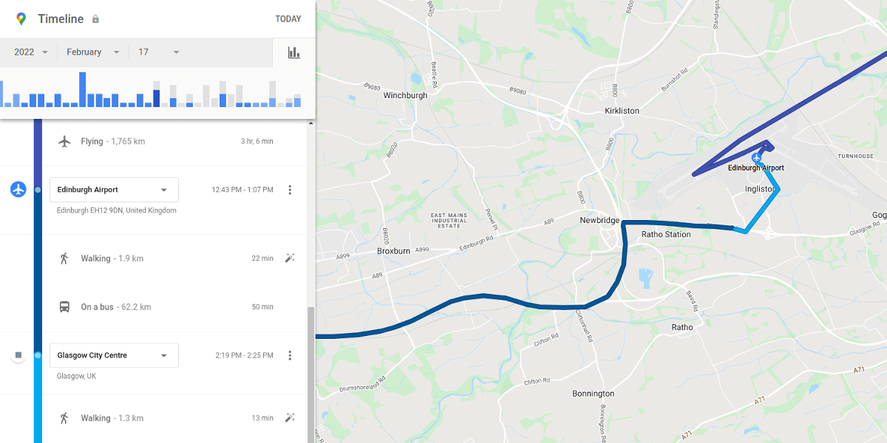

Semantic Location History Data¶
Semantic Location History data consists of more high-level and processed information compared to the raw Location History data. This semantic information is the same information that can be seen in the Timeline pages on the Google Maps website and app. Instead of individual raw location records, here the information is aggregated and summarized as a sequence of inferred (or manually set) place visits and activity segments between place visits, all with a start time and an end time.

This semantic data can be found inside the Semantic Location History folder.
The data is partitioned by year in different subfolders (named e.g. 2021, 2022...).
And for each year, the data is partitioned again by month in different JSON files (named e.g. 2022_JANUARY.json, 2022_FEBRUARY.json etc.).
Inside each semantic JSON file we can find a single flat timelineObjects array:
{
"timelineObjects" : [...]
}
Each of the timeline objects in this array is either an activitySegment or a placeVisit.
For more technical information see the full format definition.
Activity Segments¶
Activity segments correspond to user activities involving changes in location, usually a journey from one place to another, such as a walk, a car drive, a bus ride, or a flight.
Activity segments contain, among other fields, a start location, an end location, a duration, a distance, and an inferred (or manually set) activity type (walking, running, driving, ...). A list of all known activity types can be found in the Activity Type section.
Place Visits¶
Place visits correspond to a user visit or stay at a place in a fixed location for a duration of time, such as a stay at home, at work, a visit to a shopping mall, or to a restaurant.
Place visits contain, among other fields, a location and a duration.